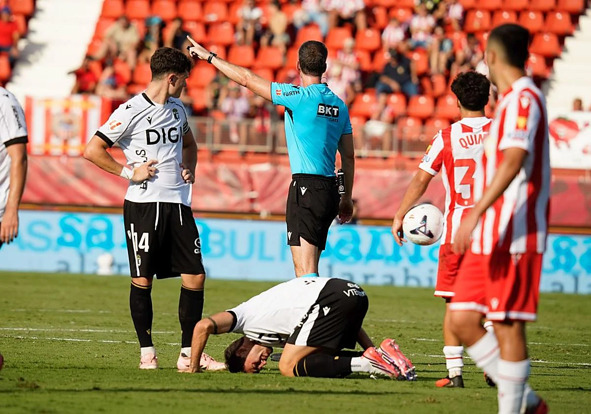

El Burgos CF ha dejado escapar uno o incluso tres puntos de Almería. Digo dejar porque han sido los burgaleses quienes han perdido el partido, hundiéndose con los cambios defensivos en el minuto 63, cediendo por completo la iniciativa a los de García Pimienta.
Hasta el primer cuarto de hora de la segunda parte vimos a un Burgos muy serio, creativo con balón y seguro en defensa, que daba sensación de control en todos los aspectos. Con identidad se puede traducir estos buenos minutos del equipo, algo que todavía no habíamos visto.
Precisamente, esta es la mejor noticia que nos deja la visita a los Juegos del Mediterráneo. La imagen reconocible, competitiva y seria que dieron los jugadores en un escenario más que complicado durante gran parte de los 90 minutos. Porque este sí que es el Burgos de Sergio Francisco.
La salida al sur es evidente que siempre es de extrema dificultad. El Burgos, conocedor de esto, saltó al terreno de juego con cierto respeto, pero con las ideas muy claras. Esto mismo permitió a los de Sergio Francisco contener en los primeros minutos a un Almería que quería ser protagonista ante su público.
El buen posicionamiento del blanquinegros, además de los excelentes repliegues, hacían que los andaluces no llegaran con claridad al área de Ander Cantero.
Por su parte, los visitantes trataban de competirles de tú a tú con personalidad y criterio. Unai Vencedor y Javi Llabres fueron los primeros que probaron fortuna con tiros lejanos. Rondaban el área y eso le hacía ver al Almería que no iba a ser fácil superar a un Burgos CF inteligente.
Los minutos avanzaban y el control sobre la posesión de los almerienses se traducía en acercamientos, aunque tímidos. Sergio Arribas, Cipenda o Leo Baptistao lo intentaban, pero sus acciones, todas ellas a través de tiros lejanos, no conseguían intimidar a Cantero.
El Burgos se sentía cómodo tanto defendiendo en su área como con balón. Cada vez que tenía la oportunidad, combinaba con muchísima facilidad, avanzando metros, rompiendo líneas de presión, creando peligro al Almería.
Precisamente, fue así como los de Sergio Francisco se adelantaron en el marcador (39’). Asociándose rápido, aprovechando una recuperación en campo contrario que hizo a Llabres pisar el área y dar un pase de la muerte a Karrikaburu, que puso el (0-1).
A raíz del gol encajado, el equipo de García Pimienta buscó una reacción rápida que finalmente no consiguieron.
Tras el descanso, los visitantes querían dar continuidad a las buenas sensaciones del primer tiempo. Sin embargo, los rojiblancos, obligados a generar por el resultado, comenzó a progresar en sus acciones y a encadenar un importante número de llegadas.
La insistencia almeriense se traducía en paradas de mucho mérito de Ander Cantero, como la que le hizo a Bonini (61’) tras un remate de cabeza.
El Burgos empezaba a sufrir. Sergio Francisco era consciente y no tardó en reaccionar. Dio entrada a Lizancos, Villarasa y Fores para echarse atrás y aguantar un resultado que daba por válido en el minuto 63.
Como consecuencia de los cambios defensivos del técnico donostiarra, el Almería se hizo dueño y señor del partido. Los castellanos cedían metros y Sergio Arribas lo aprovechaba con un centro al segundo palo que encontraba rematador y goleador en Cipenda. Así llegaba la igualada (77’).
No conformes con el empate, los de García Pimienta fueron a por el segundo gol, que no tardaría en llegar. Fue Miguel De la Fuente, en una excelente definición al borde del área, quien culminó la remontada local y dio los 3 puntos a su equipo.
Final amargo para el Burgos, que se fue con la sensación de haber hecho méritos más que suficientes como para haberse llevado algo positivo de uno de los campos más difíciles de esta impredecible liga Hypermotion.
El próximo reto de los castellanos pasa por El Plantío, escenario en el que todavía no ha perdido. Se medirá al Granada el próximo lunes a las 16:15.